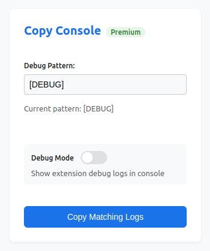

Capture relevant console logs in 1 click while coding with LLMs

Capture logs with custom patterns like
[DEBUG] or
error_code:
Works across all console methods: log(), info(), warn(), error()
Formatted logs ready for pasting into your developerment workflow (ChatGPT, Cursor, etc.)
For serious developers
Simply visit the Chrome Web Store or Firefox Add-ons marketplace and click "Add to Browser". The extension will appear in your toolbar immediately after installation.
Click the extension icon in your toolbar to copy matching logs. You can configure your preferred pattern matching in the extension popup.
Copy Console is fully supported on both Google Chrome and Mozilla Firefox browsers.
Yes! The free version includes basic pattern matching with a 5-use limit. For unlimited usage and all premium features, upgrade to Pro for a one-time payment of $5.